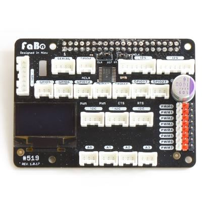
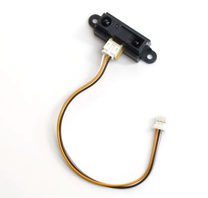
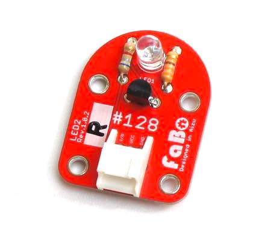
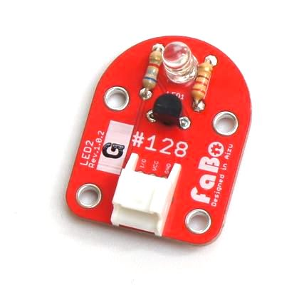
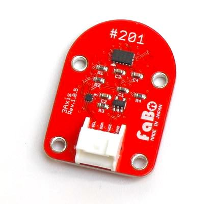
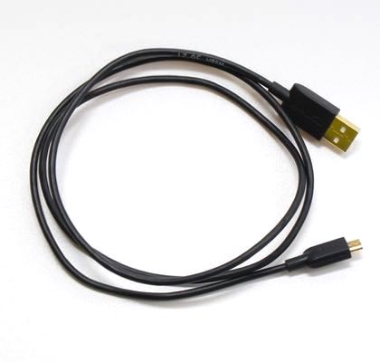
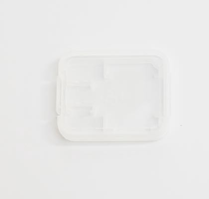

Edge AI Kit ２GBモデル内容物
FaBo Edge AI Kit 2GB BOM
対象モデル
| コード番号 |
|---|
| EAK2-1 |
※開封後はすぐ欠品がないかご確認お願いいたします。
※予告なく、仕様、外観、価格は変更する場合がございます。
| 写真 | 部品 | 個数 |
|---|---|---|
 |
NVIDIA Jetson Nano 2GB 開発者キット ※本体BootROMアップデートのため開封済み |
１台 |
|  | FaBo #519 Jetson Nano AI Edge OUT/IN Board | １枚 |
 |
FaBo #103 Button ※1KΩプルアップ版 |
３個 |
|  | FaBo #116 Distance | １個 |
|  | FaBo #128 LED2 赤 | １個 |
 |
FaBo #128 LED2 青 | １個 |
|  | FaBo #128 LED2 緑 | １個 |
|  | FaBo #202 3Axis | １個 |
 |
FaBo #203 Color | １個 |
 |
マイクロサーボ SG90 | ２個 |
 |
FaBo 3pinケーブル | ３本 |
 |
FaBo 4pinケーブル | ２本 |
 |
AC600ハイパワーデュアルバンド無線LAN子機 | １台 |
 |
ロジクール ウェブカメラ C270n ブラック HD 720P | １台 |
 |
Smraza RaspberryPi4 USB-CラズベリーACアダプター | １個 |
|  | USBケーブル0.9m(2.0タイプAオス - マイクロBケーブル) | １本 |
 |
microSDカード ６４GB | １枚 |
|  | SDカードケース | １個 |